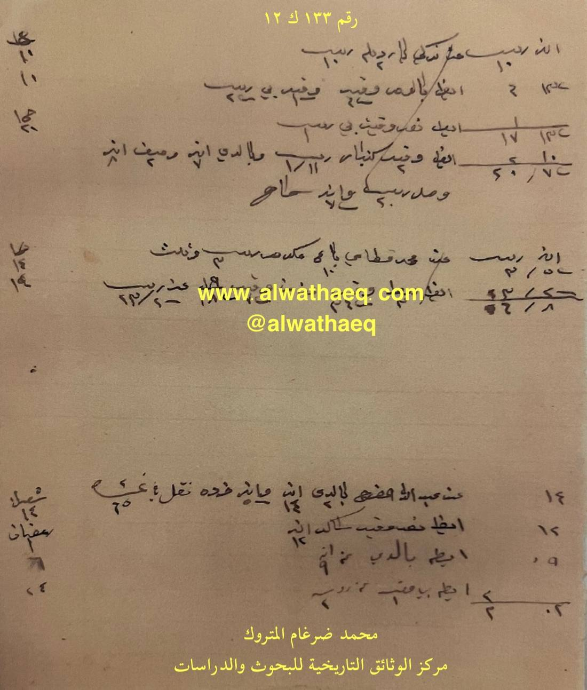

1913 and 1933 · A 1913 ledger of Mohammed bin Abdullah Al-Matrook, and a 1933 list of merchants exporting dates from Iraq
Mohammed Qatami, sea merchant and nakhuda
What it is
Mohammed Qatami is named in a 1913 account. In 1933 he is listed first of seven nakhudas sailing for the merchant Abdullah Al-Hamad Al-Saqr, in the record of fees paid on dates exported from Iraq.
Why it matters
Mohammed Abdulaziz Al-Qatami at sea as a nakhuda about six years before his death in March 1939.
Who is meant
Confirmed by the family: Mohammed Abdulaziz, Jassim's brother and Amna's father, was a sea merchant and nakhuda.
Page copies


Original text
English translation
Notes
Typed extracts as published by Alwathaeq. Young men took on adult roles early then; Naser Abdulwahab Al-Qatami commanded his crew at 13.
Others named
Sources
Alwathaeq (alwathaeq.com): the ledgers and letters of the Kuwaiti merchant Mohammed bin Abdullah Al-Matrook, with commentary by Mohammed Dhurgham Al-Matrook. Scans as published by Alwathaeq.
Archive reference
- Date exporters, 1933 · 1933
- Document 133, book 12 · 1913
How this text was made: Arabic extracts as published by Alwathaeq. English translation by Claude; please review.
Open in the interactive site